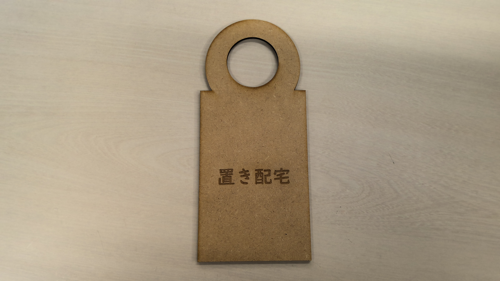
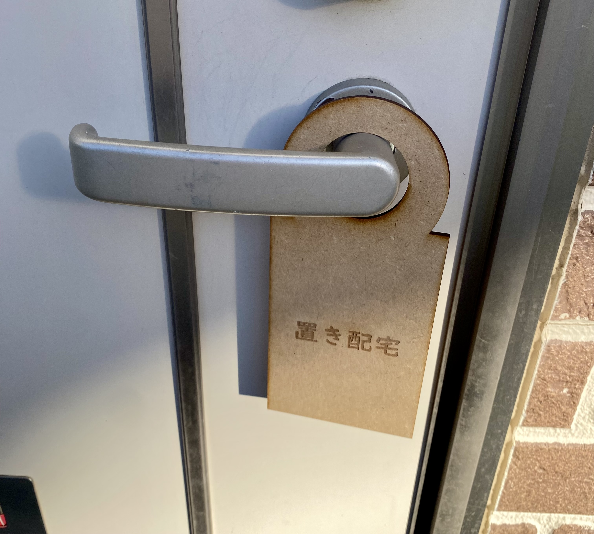

Design for Others
置き配宅をわかりやすくする


- 設計ファイル
AIファイル
- 作品の説明
今回はレーザーカッティングを使って置き配宅をわかりやすくするものをつくりました。
これを作ろうと思ったきっかけは過去の例でzoom中の部屋をわかりやすくする作品があり、
とてもわかりやすく役立つと思って参考にし制作を進めました。作品を考えるにあたって、
ウーバーイーツやデリバリーが流行っている今の世の中で届ける家を探すのは大変ではないのかと思って
置き配宅の札を作ることにしました。
- 制作プロセスの中で調べたこと
- ドアノブの大きさ
- 歴代の先輩方の作品
- 反省点や応用がきくなと思った点